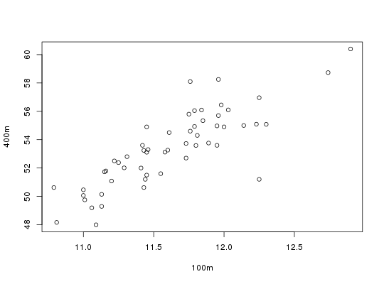
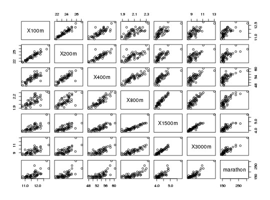

Data for Exercises 2.97, 5.115, and 9.62
Track
A data frame with 55 observations on eight variables
athlete's country
time in seconds for 100 m
time in seconds for 200 m
time in seconds for 400 m
time in minutes for 800 m
time in minutes for 1500 m
time in minutes for 3000 m
time in minutes for marathon
Dawkins, B. (1989), "Multivariate Analysis of National Track Records," The American Statistician, 43(2), 110-115
Kitchens, L. J. (2003) Basic Statistics and Data Analysis. Duxbury
plot(`200m` ~ `100m`, data = Track)plot(`400m` ~ `100m`, data = Track)plot(`400m` ~ `200m`, data = Track)cor(Track[, 2:8])#> 100m 200m 400m 800m 1500m 3000m marathon #> 100m 1.0000000 0.9527911 0.8346918 0.7276888 0.7283709 0.7138310 0.6863358 #> 200m 0.9527911 1.0000000 0.8569621 0.7240597 0.6983643 0.6844756 0.6855745 #> 400m 0.8346918 0.8569621 1.0000000 0.8984052 0.7878417 0.7525889 0.7054241 #> 800m 0.7276888 0.7240597 0.8984052 1.0000000 0.9016138 0.8511240 0.7792922 #> 1500m 0.7283709 0.6983643 0.7878417 0.9016138 1.0000000 0.9550566 0.8779334 #> 3000m 0.7138310 0.6844756 0.7525889 0.8511240 0.9550566 1.0000000 0.8858136 #> marathon 0.6863358 0.6855745 0.7054241 0.7792922 0.8779334 0.8858136 1.0000000